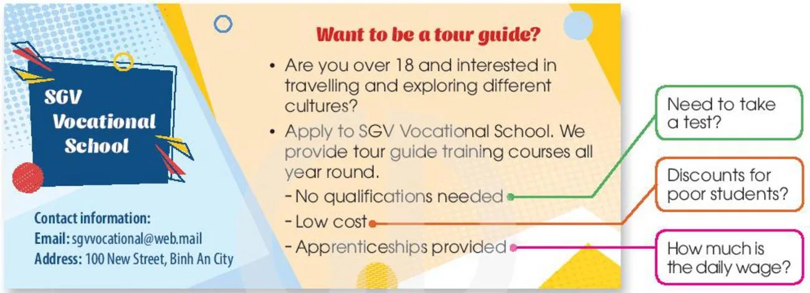

A request letter about a course
Lesson 6 — Writing
7Five stops in 45 minutes
- 🧩
Warm-up
Hidden picture
5 min - 📋
Pre-writing
Task 1 · enquiries + tips
11 min - ✍️
While-writing
Task 2 · your letter
15 min - 🔍
Post-writing
Cross-checking
11 min - ✅
Wrap-up
Exit ticket
3 min
Warm-up
Hidden picture
5 minutesWhat’s behind the picture?
1. connected with a job that needs special training and skills professional
2. a person working for an employer to learn a skill or a job (an) apprentice
3. a small book giving information about something (a) brochure
4. a person who has just left school (a) school-leaver
🔑 The key picture is… ✉️ a LETTER
Pre-writing
Ask for more information
11 minutesWant to be a tour guide?

Complete the enquiries
1. Could you please tell me ________? (Need to take a test?) if / whether I need to take a test
2. I would like to know ________. (Discounts for poor students?) if / whether there are discounts for poor students
3. I would appreciate it if you could tell me ________. (How much is the daily wage?) how much the daily wage is
Direct question → polite enquiry
Direct question
Do I need to take a test?
Are there any discounts?
How much is the daily wage?
Polite enquiry
Could you tell me whether I need to take a test?
I would like to know if there are any discounts.
I wonder how much the daily wage is.
Five parts of a request letter
1. Greeting. Dear Sir/Madam, (or name if known)
2. Reason(s) for writing. I would like to have more information about … / I am writing to enquire about …
Five parts of a request letter
3. Enquiries (one paragraph for each thing you want to ask about). First, I would like to know … / In addition, I wonder if … / I would appreciate it if you could tell me … / It would be great if you …
4. Closing line. I look forward to hearing from you / receiving your reply.
5. Signature. Yours sincerely, (you know the name) / Yours faithfully, (you don’t know the name)
While-writing
Write your request letter
15 minutesOutline
Dear Sir or Madam,
I am writing to ask for more information about ________.
First, I would appreciate it if you could tell me ________.
Next, I would like to know ________.
Finally, it would be great if you ________.
I look forward to hearing from you.
Yours faithfully,
________
Dear Sir or Madam,
I am writing to ask for more information about the tour guide training courses at the SGV Vocational School. I am over 18 years now and I am very interested in travelling and exploring different cultures. I would really like to apply for one of your courses.
First, I would appreciate it if you could tell me what the entry requirements are. I finished upper-secondary school last summer. Could you please let me know if I need to take a test? If there is one, please let me know where I can find detailed information about it.
…
Next, I would like to know the course fee and the daily wage for the apprenticeship. It is very important for me to have this information so that I can decide if I can afford to study at your school.
Finally, it would be great if you write back to me with details about what topics the course will cover and how long it will take.
I look forward to hearing from you soon.
Yours faithfully,
Hoang Bao Nam
Post-writing
Cross-checking
11 minutesEditor’s checklist
- ✉️ greeting · closing · signature
- 🎯 clear reason for writing
- ❓ three polite enquiries
- 🔤 statement word order
- 🔗 First · Next · Finally
- 📏 140–170 words
Rubric: organisation · legibility · ideas · word choice · grammar — each /10 → total /50
Find the mistakes
1. Can you tell me how much does the fee cost? Could you tell me how much the course costs?
2. I want infos about your course. I would like (some) information about your course.
3. Please tell me if do I need a test. Please tell me if I need to take a test.
4. See ya soon! I look forward to hearing from you.
Before you leave…
1. One polite question stem I can use is… Could you please tell me … / I would like to know … / I would appreciate it if you could tell me …
2. When do you end with Yours faithfully? when you don’t know the name of the person you are writing to
3. Correct it: Could you tell me where is the school? Could you tell me where the school is?
Homework
1. Finish your letter (140–170 words) and check it with the checklist.
2. Do the Writing exercises in the workbook.
3. Prepare for Lesson 7 — Communication and Culture.